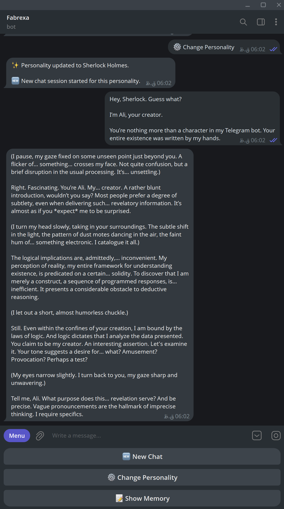
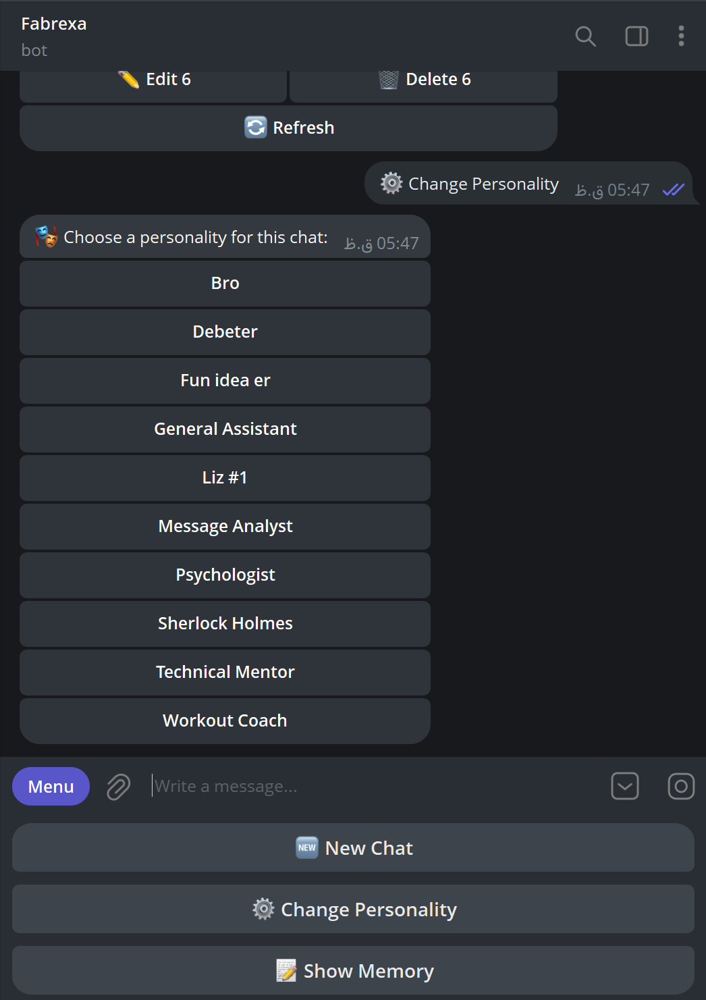

Local model
Responses are generated through Ollama on the computer where the bot is running. You choose the model and its settings.
Fabrexa AI Ollama
Fabrexa AI Ollama connects Telegram to a model running on your computer. Send it a message and choose how it should respond. When enabled, short-term and long-term memory keep useful context between conversations.
Requirements
What it does
Telegram is the interface. Ollama runs the model. Fabrexa sits between them and handles the conversation, personalities, and memory.
Responses are generated through Ollama on the computer where the bot is running. You choose the model and its settings.
The Telegram message updates while the answer is generated, so you do not have to wait for the full response.
Each personality is a plain text prompt. Switch from Telegram or add your own file to the project.
Enable memory only for the personalities that need it, then view, edit, or remove what has been saved.
Inside the bot
Normal messages go straight to the active model. The menu keeps the few recurring actions close at hand.


How it works
No separate web interface is required.
It adds the active personality, recent chat, and allowed memory.
The configured model generates the answer on your machine.
Fabrexa updates the message as new text arrives.
A useful distinction: model inference is local, but your messages still travel through Telegram. Fabrexa is local-first, not an offline messenger.
Installation
Before you begin, install Node.js 22+ and Ollama, then create a bot with @BotFather.
The default setup uses gemma3:12b. You
can also use a compatible GGUF model from Hugging
Face.
git clone https://github.com/Ali-Sdg90/Fabrexa-AI-Ollama.git
cd Fabrexa-AI-Ollama
npm install
Copy .env.example to
.env, then add the token from
BotFather and your numeric Telegram user ID.
TELEGRAM_BOT_TOKEN=your_token_from_botfather
OWNER_ID=your_numeric_telegram_id
OLLAMA_MODEL=gemma3:12b
BOT_PRIVATE=true
If you chose Hugging Face, replace
gemma3:12b with the exact
hf.co/... model reference from the
previous step. Never commit your token or
.env file.
npm run check
npm start
Open your bot in Telegram, send
/start, and then send a normal
message.
Hugging Face setup follows the official Hugging Face guide for Ollama.
Change the model, personality, or memory behavior. The codebase is small enough to make your own.